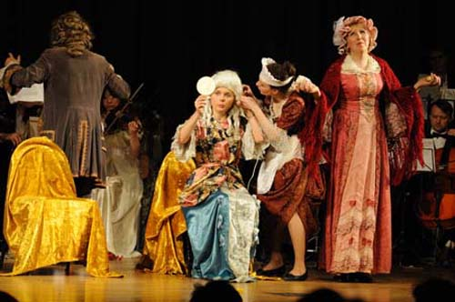
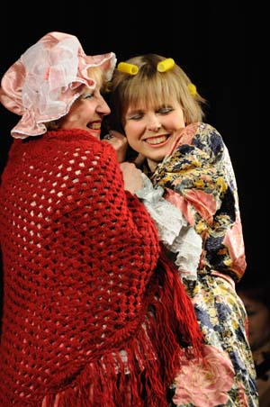
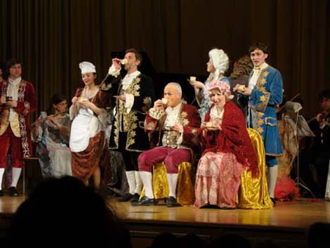

Кофе в Центральную Европу попал в 1683 году после второй осады Вены турецкими войсками,
когда среди трофеев был найден мешок с кофейными зернами.
Вокруг кофе разгорелись нешуточные страсти.
Против кофе выступила церковь
В богобоязненных семьях кофе не употребляли, а молодежи, падкой на все новое, не позволяли посещать кофейни.
Кофе пили украдкой, но со временем мода на кофе все больше распространялась, особенно среди женской половины.

Заказ на сочинение кантаты Иоганн Себастьян Бах получил от владельца
кофейни Циммермана в Лейпциге. Вместе с модным молодым поэтом Пикандером
они быстро придумали образ Лизетты, которая пьет кофе круглые сутки.
Кстати, так звали шуструю шестилетнюю дочку Баха. Содержание кантаты
очень простое. Почтенный бюргер Шлендриан, имя которого можно перевести
как «Стародум», решает отучить дочь Лизетту от «пагубного зелья»
и угрожает лишить ее подарков к праздникам, запереть дома и даже запретить выходить замуж,
если она не прекратит пить кофе. Ради женитьбы Лизетта соглашается отказаться от кофе,
но... только на время, пока ищут жениха!
В итоге получилась мини-опера — единственная опера в творчестве Баха.
Более того, можно сказать, что с этой мини-оперы начался немецкий зингшпиль,
который лет через 50 развил Моцарт. А кофе был и остается темой
не только кантат, но и шуток.
|

|
Посетительница: Официант, можно мне кофе?
Официант: Я вам доктор что ли, откуда я знаю, можно вам кофе или нельзя.
Официант (подходя к клиенту): Кофе? Чай?
Посетительница: Пожалуй, кофе.
Официант: А вот и не угадали - чай.
Штирлиц: Барбара, у вас не найдется чашечки кофе?
Барбара: Геноссе Штирлиц, кофе нет, но есть чай.
Штирлиц: Да, наши уже близко.
Программист (знакомясь): Девушка, хотите кофе?
Девушка: Нет!
Программист: А чаю?
Девушка: Нет!
Программист: Ну, а водки?
Девушка: Нет!
Программист: Странно, стандартные драйверы не подошли...
|
| Дата показа |
Время |
Место проведения |
|
|
| 3 апреля 2009 г. |
19:00 |
Международный фонд славянской письменности и культуры |
Карта |
Афиша |
| 7 апреля 2009 г. |
19:00 |
1-й Новый Учебный корпус МГУ им. М. В. Ломоносова |
Карта |
Афиша |
| 19 мая 2009 г. |
19:00 |
Государственный астрономический институт им. П. К. Штернберга |
Карта |
Афиша |
Режиссеры — В. Крейсберг, А. Коган
Фотографии В. Щугорева и К. Кузнецова